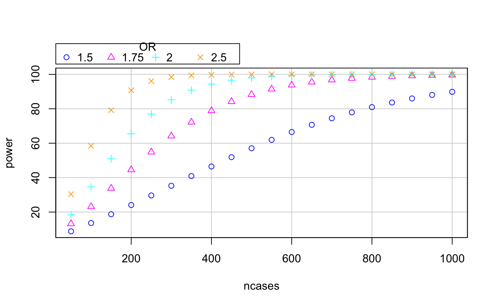

R/mthapower.R
For a given study size, determine the minimum effect size that can be detected with the desired power and significance level, in a study with Nh haplogroups.
Note: I assume that case-control equations are valid for cohorts with a balanced number of cases and controls.
This function may not be generalizable for all studies involving mtDNA haplogroups.
mthapower(n.cases = ncases, p0 = p0, Nh = Nh, OR.cas.ctrl = OR.cas.ctrl, sig.level = sig.level)
| n.cases | number of cases or controls from the study. It can be either a single value, or a sequence: |
|---|---|
| p0 | the frequency of the haplogroup in the control population. It depends on haplogroup baseline frequency. |
| Nh | number of categories for haplogroups. Usually 10 haplogroups plus one category for rare haplogroups: |
| OR.cas.ctrl | (p1 / (1-p1)) / (p0 / (1-p0)) the OR you want to detect with your data. |
| sig.level | the alpha error accepted. Can take 3 possible values: |
Calculates post-hoc power given the number of cases and other parameters. The output is an object of class data.frame, ready to plot.
1. DC Samuels, AD Carothers, R Horton, PF Chinnery. The Power to Detect Disease Associations with Mitochondrial DNA Haplogroups. AJHG, 2006. 78(4):713-720. DOI:10.1086/502682.
2. Source code: github.com/aurora-mareviv/mthapower.
3. Shiny app: aurora.shinyapps.io/mtDNA_power_calc.
# Example 1: pow <- mthapower(n.cases=203, p0=0.443, Nh=13, OR.cas.ctrl=2.33, sig.level=0.05) # Example 2: # Create data frames pow.H150 <- mthapower(n.cases=seq(50,1000,by=50), p0=0.433, Nh=11, OR.cas.ctrl=1.5, sig.level=0.05) pow.H175 <- mthapower(n.cases=seq(50,1000,by=50), p0=0.433, Nh=11, OR.cas.ctrl=1.75, sig.level=0.05) pow.H200 <- mthapower(n.cases=seq(50,1000,by=50), p0=0.433, Nh=11, OR.cas.ctrl=2, sig.level=0.05) pow.H250 <- mthapower(n.cases=seq(50,1000,by=50), p0=0.433, Nh=11, OR.cas.ctrl=2.5, sig.level=0.05) # Bind the three data frames: bindata <- rbind(pow.H150,pow.H175,pow.H200,pow.H250) # Adds column OR to binded data frame: bindata$OR <- rep(factor(c(1.50,1.75,2,2.5)), times = c(nrow(pow.H150), nrow(pow.H175), nrow(pow.H200), nrow(pow.H250))) # Create plot: # install.packages("car") library(car) scatterplot(power~ncases | OR, reg.line=FALSE, smooth=FALSE, spread=FALSE, boxplots=FALSE, span=0.25, by.groups=FALSE, data=bindata)